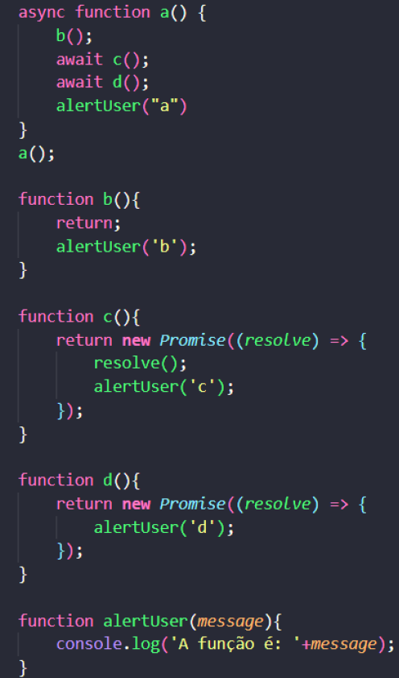

3) Qual a ordem dos prints no console?
c d4) Existe algum erro nesse código? Se sim, comente sobre?
Sim, o return da funcao "b()" vem antes da mensagem, e na funcao "d()" a promise nn é resolvida, nunca tendo um fim, fazendo com que a mensagem 'a' não apareca
